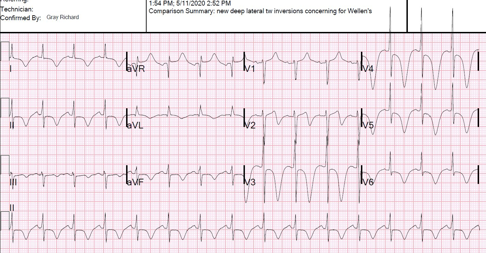
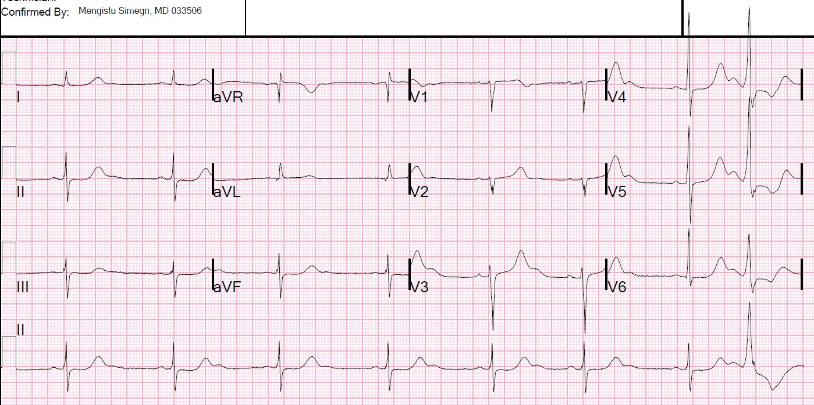
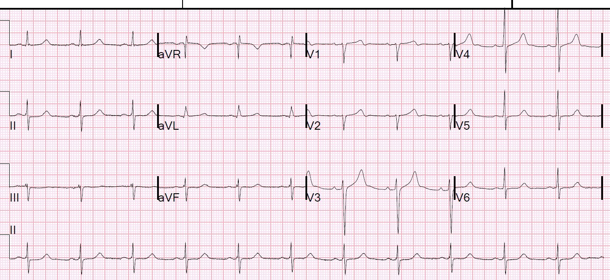
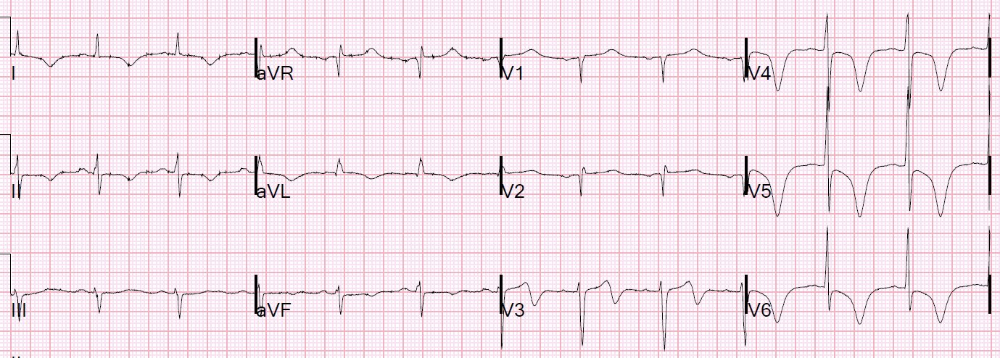
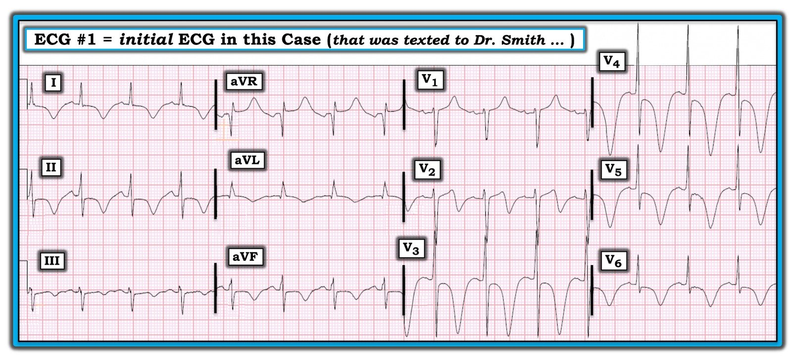
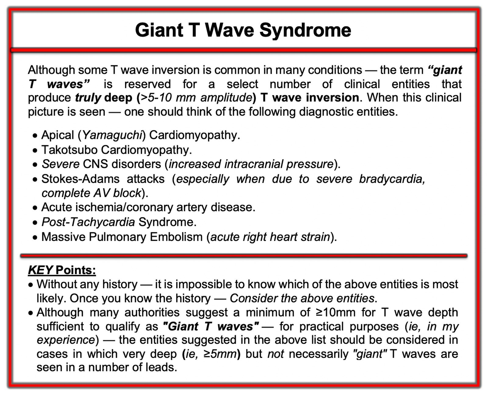
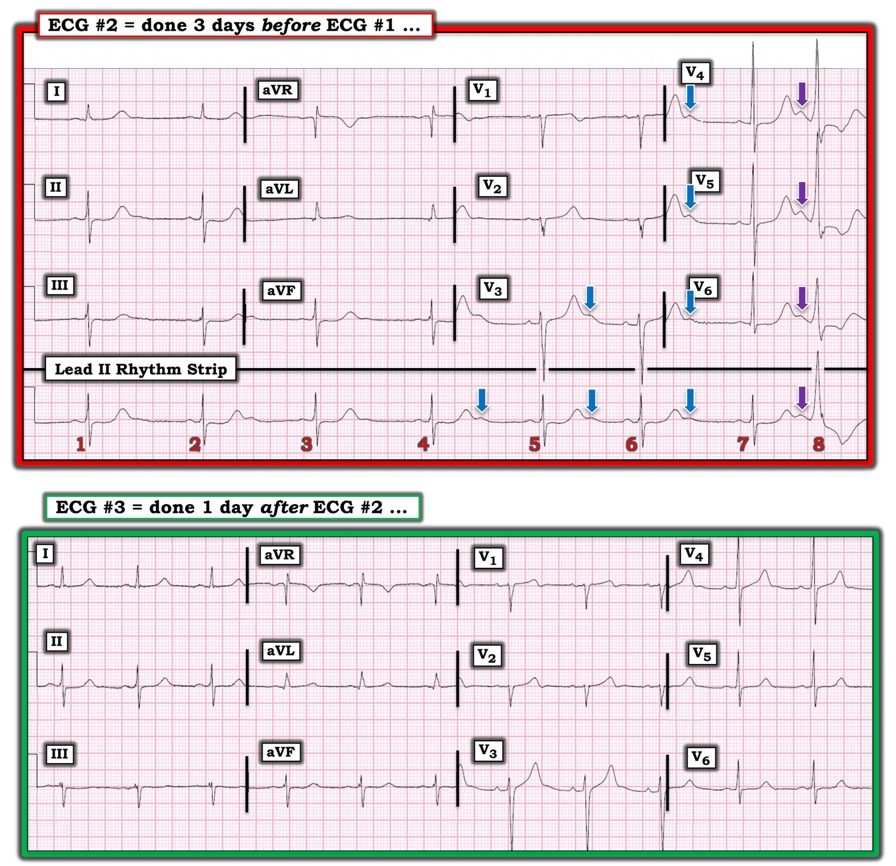

22/06/2020 — Sóng T đảo ngược lan tỏa và QT rất dài
Bản dịch tiếng Việt của bài "Diffuse T-wave inversions and a very long QT" – Dr. Smith’s ECG Blog. Giữ nguyên toàn bộ 9 hình ảnh của bản gốc.
Điện tâm đồ này được nhắn tin cho tôi và tôi đã đọc nó trong lúc đang đạp xe leo núi.
Câu trả lời của tôi là “takotsubo”.
Điện tâm đồ 1


Đây là hình ảnh rất điển hình của takotsubo. Ngoài lề: Tôi phân loại điện tâm đồ của takotsubo thành 2 nhóm lớn: 1) ST chênh lên, thường giống STEMI 2) Sóng T đảo ngược: không giống STEMI, mà giống NonSTEMI hoặc STEMI đã tái tưới máu
Ngày hôm sau tôi nhắn tin lại để hỏi bệnh cảnh lâm sàng ra sao, siêu âm tim cho thấy gì và kết cục thế nào.
Hóa ra bệnh nhân này nghiện rượu nặng, đang trong hội chứng cai rượu, và dường như đã có một cơn co giật do cai rượu trước khi đến viện. Lý do chính đến khám của anh ấy là yếu.
Chỉ vài ngày trước đó, anh ấy đã nằm viện vì hội chứng cai rượu và đã có điện tâm đồ này:
Điện tâm đồ 2 (đây là điện tâm đồ đầu tiên theo thứ tự thời gian, 3 ngày trước)


Lúc đó bệnh nhân đã bị nhiều cơn xoắn đỉnh (torsades de pointes). Hóa ra K của anh ấy là 2.5 và Mg là 1.3. Sau khi bù đủ các chất này, một điện tâm đồ khác được ghi:
Điện tâm đồ 3 (điện tâm đồ thứ 2 theo thứ tự thời gian, 2 ngày trước)


Ca bệnh tiếp diễn:
Điện giải bình thường.
Anh ấy được siêu âm tim tại giường, chức năng bình thường.
Troponin đỉnh chỉ tăng rất nhẹ, ở mức 0.035 ng/mL (giới hạn trên tham chiếu (URL) bách phân vị thứ 99 = 0.030)
Vậy đây không phải takotsubo. Rất khó có khả năng là nhồi máu cơ tim cấp.
Đây là điện tâm đồ cuối cùng:
Điện tâm đồ 4 (cuối cùng theo thứ tự thời gian)


Nguyên nhân của sóng T đảo ngược chưa được xác định. Có lẽ là một hiện tượng thoáng qua sau cơn co giật? Hoặc có lẽ đây thực sự là hội chứng Wellens mà troponin không tăng nhiều. Chỉ có chụp mạch vành mới cho biết chắc chắn.

===================================
BÌNH LUẬN CỦA TÔI, bởi KEN GRAUER, MD (22/6/2020):
===================================
Tôi RẤT THÍCH ca bệnh này do Dr. Smith trình bày — vì nó đề cập tới một số thực thể quan trọng trong đọc điện tâm đồ cấp cứu. Tôi tập trung Bình luận của mình vào việc xem kỹ hơn các hiện tượng này.
- Cho rõ ràng — tôi giữ nguyên cách đánh số các bản ghi trong ca này theo đúng trình tự chúng được trình bày.
- Ca bệnh bắt đầu với điện tâm đồ #1 — được nhắn tin cho Dr. Smith (Hình 1).


SUY NGHĨ CỦA TÔI về điện tâm đồ #1: Nhịp xoang khoảng ~90 lần/phút. Khoảng PR và thời gian QRS bình thường. Trục mặt phẳng trán hơi lệch trái (khoảng -10 độ). Phần còn lại của bản ghi đầy rẫy bất thường!
- Như Dr. Smith đã nêu — khoảng QT kéo dài rõ rệt (chiếm hơn 2/3 khoảng R-R).
- Có tiêu chuẩn điện thế của LVH — thỏa tiêu chuẩn Peguero (tức là, tổng sóng S sâu nhất ở bất kỳ chuyển đạo ngực nào + S ở V4 ≥23 [nữ] hoặc ≥28 [nam]). Ở điện tâm đồ #1 — sóng S ở chuyển đạo V3 (18) + S ở V4 (13) = 31.
- LƯU Ý: Để ôn lại các tiêu chuẩn điện thế mà tôi ưa dùng để chẩn đoán LVH trên điện tâm đồ — Xin xem Bảng ở cuối Bình luận của tôi trong bài ngày 20 tháng Sáu năm 2020 trên Dr. Smith’s ECG Blog.
Nhưng dấu hiệu đáng chú ý nhất ở điện tâm đồ #1 là sự hiện diện của sóng T đảo ngược “khổng lồ”. Sóng T đảo ngược thấy ở mọi chuyển đạo ngoại trừ aVR và V1.
- Mặc dù một mức độ sóng T đảo ngược là thường gặp trong nhiều bệnh cảnh — thuật ngữ “sóng T khổng lồ” chỉ dành cho một số ít thực thể lâm sàng gây ra sóng T đảo ngược thực sự sâu (tức là, biên độ >5-10 mm). Độ sâu của sóng T đảo ngược ở chuyển đạo V3 và V4 của điện tâm đồ #1 vượt quá 15 mm!
- ĐIỂM THEN CHỐT (PEARL) #1 — Sóng T thực sự “khổng lồ” không quá phổ biến. Khi gặp chúng — nên cân nhắc các thực thể chẩn đoán liệt kê trong Hình 2. Nếu không có bệnh sử — không thể biết thực thể NÀO trong danh sách này có khả năng nhất. Một khi đã biết bệnh sử — Chỉ cần cân nhắc các khả năng chẩn đoán này!
- ĐIỂM THEN CHỐT (PEARL) #2 — Khi thấy sóng T hai pha với phần cuối dốc xuống mạnh ở chuyển đạo V2 của điện tâm đồ #1, ta dễ nghĩ ngay tới hội chứng Wellens. Nhiều khả năng không có hội chứng Wellens ở ca này. Mặc dù hội chứng vành cấp do thiếu máu cục bộ là một khả năng chẩn đoán (tức là, thiếu máu cục bộ cấp có nằm trong các thực thể liệt kê ở Hình 2) — cũng nên nhớ rằng có những nguyên nhân khác gây ra hình ảnh ST-T mà ta thấy ở chuyển đạo V2 của điện tâm đồ #1. Các nguyên nhân này bao gồm (cùng với những nguyên nhân khác) — LVH, bệnh cơ tim, tái tưới máu mạch vành. Ở điện tâm đồ #1 — tôi nghi rằng lý do có sóng T hai pha ở V2 đơn giản chỉ là sự phản ánh biên độ QRS và ST-T tăng mà ta thấy, với chuyển đạo V2 đóng vai trò “chuyển đạo chuyển tiếp” nằm giữa sóng T dương cao ở chuyển đạo V1 và sóng T âm rất sâu ở chuyển đạo V3.


Nửa thứ 2 của ca này đề cập tới một loạt Điểm cần học quan trọng không kém.
- Cho rõ ràng — tôi đặt bản ghi thứ 2 và thứ 3 của ca này cạnh nhau trong Hình 3.
- Điện tâm đồ #2 (được trình bày trong Hình 3) — được ghi trong lần nằm viện gần đây trước đó của bệnh nhân, vì hội chứng cai rượu. Điện tâm đồ #2 được ghi 3 ngày trước điện tâm đồ #1 — và vào thời điểm ghi điện tâm đồ #2, bệnh nhân có rối loạn điện giải nặng (K+ huyết thanh = 2.5 mEq/L và Mg++ huyết thanh = 1.3 mg/dl).
- Trong số các biến chứng khác của hội chứng cai rượu ở bệnh nhân này trong lần nằm viện gần đây — có các cơn xoắn đỉnh (Torsades de Pointes) và một cơn co giật do cai rượu.
- Điện tâm đồ #3 (trong Hình 3) — được ghi 1 ngày sau điện tâm đồ #2, khi điện giải huyết thanh đã được điều chỉnh.


SUY NGHĨ CỦA TÔI về điện tâm đồ #2: Như Dr. Smith đã nêu — điện tâm đồ #2 biểu hiện một số dấu hiệu đặc trưng của hạ kali máu và hạ magnesi máu đáng kể. Các dấu hiệu này gồm:
- Nhịp chậm xoang rõ rệt và loạn nhịp xoang + một PVC (nhát #8).
- Đoạn ST dẹt ở nhiều chuyển đạo, với gợi ý kín đáo ST chênh xuống ở một số chuyển đạo trong số đó.
- Sóng U rất nổi bật ở nhiều chuyển đạo (các MŨI TÊN màu trên điện tâm đồ #2).
- Khoảng QT rất dài, dường như còn kéo dài thêm do sóng U nổi bật hòa lẫn vào phần cuối sóng T ở một số chuyển đạo.
- ĐIỂM THEN CHỐT (PEARL) #3 — Chúng ta được biết bệnh nhân này đã có nhiều cơn xoắn đỉnh xảy ra quanh thời điểm ghi điện tâm đồ #2. Điều này không có gì đáng ngạc nhiên — vì các yếu tố thuận lợi cho việc xuất hiện xoắn đỉnh bao gồm: i) Hạ kali máu và hạ magnesi máu; ii) QT kéo dài rõ rệt; và, iii) Nhịp chậm rõ rệt. Mỗi yếu tố này có lẽ đều đã tác động ở bệnh nhân này.
- BẠN CÓ ĐỂ Ý KHÔNG? — rằng sóng U xuất hiện ngay trước PVC (nhát #8) lớn hơn rõ (các mũi tên TÍM) so với mọi sóng U khác (các mũi tên XANH). Tôi không rõ vì sao lại như vậy — nhưng nghĩ rằng điều này thú vị nên muốn chỉ ra.
SUY NGHĨ CỦA TÔI về điện tâm đồ #3: Như Dr. Smith đã nêu — điện tâm đồ #3 được ghi sau khi điều chỉnh rối loạn điện giải vốn có lúc ghi điện tâm đồ #2 một ngày trước đó. Hãy NHỚ lưu ý khi so sánh điện tâm đồ #2 với điện tâm đồ #3 rằng:
- Tần số nhịp ở điện tâm đồ #3 giờ đã phù hợp hơn — nhịp giờ đã đều — và giờ không còn PVC.
- Khoảng QT giờ trông bình thường.
- Giờ chỉ còn gợi ý tối thiểu về các sóng U nhỏ xíu (có lẽ ở chuyển đạo V3, V4) — nhưng rõ ràng biên độ sóng U đã giảm rõ rệt so với điện tâm đồ #2.
- Đoạn ST dẹt vẫn còn ở một số chuyển đạo — nhưng gợi ý ST chênh xuống trước đây thấy ở vài chuyển đạo đã hết.
- ĐIỂM THEN CHỐT (PEARL) #4 — Cách TỐT NHẤT để trở nên giỏi nhận diện các dấu hiệu điện tâm đồ của K+ thấp (và Mg++ thấp) — là tận dụng mọi cơ hội khi bạn biết chính xác giá trị huyết thanh thấp của 2 cation này trên điện tâm đồ ban đầu (ở ca này, là điện tâm đồ #2) — KHI bạn so sánh bản ghi ban đầu đó (lúc điện giải huyết thanh bất thường) với điện tâm đồ ghi sau khi điều chỉnh rối loạn điện giải (như chúng ta làm trong Hình 3).
TỔNG HỢP LẠI TẤT CẢ ở ca này:
Câu hỏi ban đầu đặt ra khi đánh giá điện tâm đồ #1 ở ca này, là ĐÂU là nguyên nhân có khả năng của các sóng T “khổng lồ” mà ta thấy?
- Hình 2 gợi ý các thực thể chẩn đoán cần cân nhắc.
- Cần lưu ý — điện tâm đồ #2 và #3 (được ghi 3 và 2 ngày trước điện tâm đồ #1) — không cho thấy hình ảnh sóng T “khổng lồ” như ta thấy ở điện tâm đồ #1. Do đó — nguyên nhân có khả năng dường như là một điều gì đó đã xảy ra trong khoảng 2 ngày giữa lúc ghi điện tâm đồ #3 và điện tâm đồ #1.
- Siêu âm tim tại giường bình thường, và troponin đỉnh chỉ tăng rất nhẹ — điều này loại trừ bệnh cơ tim Takotsubo, bệnh cơ tim mỏm và thiếu máu cục bộ cấp khỏi danh sách các nguyên nhân tiềm năng trong Hình 3 [người dịch: nguyên văn ghi “Figure-3”, nhiều khả năng là lỗi đánh máy của Hình 2].
- Tôi không thấy điều gì trong bệnh sử gợi ý thuyên tắc phổi cấp diện rộng hay cơn Stokes-Adams.
Bằng phương pháp loại trừ — còn lại hội chứng sau nhịp nhanh và/hoặc một rối loạn thần kinh trung ương (CNS) nặng — là (các) nguyên nhân có khả năng nhất của các sóng T khổng lồ này.
- Bệnh nhân này đã có một số cơn xoắn đỉnh được ghi nhận trong lần nằm viện trước. Chúng ta được biết điện giải đã được điều chỉnh lúc ra viện — nhưng tôi không thấy thông tin về kết quả điện giải huyết thanh xét nghiệm lại vào thời điểm ghi điện tâm đồ #1. Vì vậy có vẻ có khả năng K+ và Mg++ huyết thanh đã giảm trong 2 ngày kể từ khi ghi điện tâm đồ #3 — dẫn tới các cơn xoắn đỉnh khác, có thể kéo dài đủ để gây ra hiệu ứng “trí nhớ” (memory) sau nhịp nhanh sau khi tự hết.
- Chúng ta được biết bệnh nhân này đã có ít nhất một cơn co giật do cai rượu. Các rối loạn thần kinh trung ương nặng nổi tiếng là gây ra thay đổi ST-T bất thường rõ rệt (đôi khi kỳ dị).
- Một đặc điểm đáng chú ý của sóng T “khổng lồ” thấy ở điện tâm đồ #1 — là QTc kéo dài rõ rệt đến mức nào. Cả hội chứng sau nhịp nhanh lẫn thảm họa thần kinh trung ương (CNS) đều được biết là gây ra mức độ QTc kéo dài rõ rệt như vậy — nên một trong hai (và/hoặc cả hai) rối loạn này có thể là nguyên nhân của hình ảnh điện tâm đồ mà ta thấy ở điện tâm đồ #1.